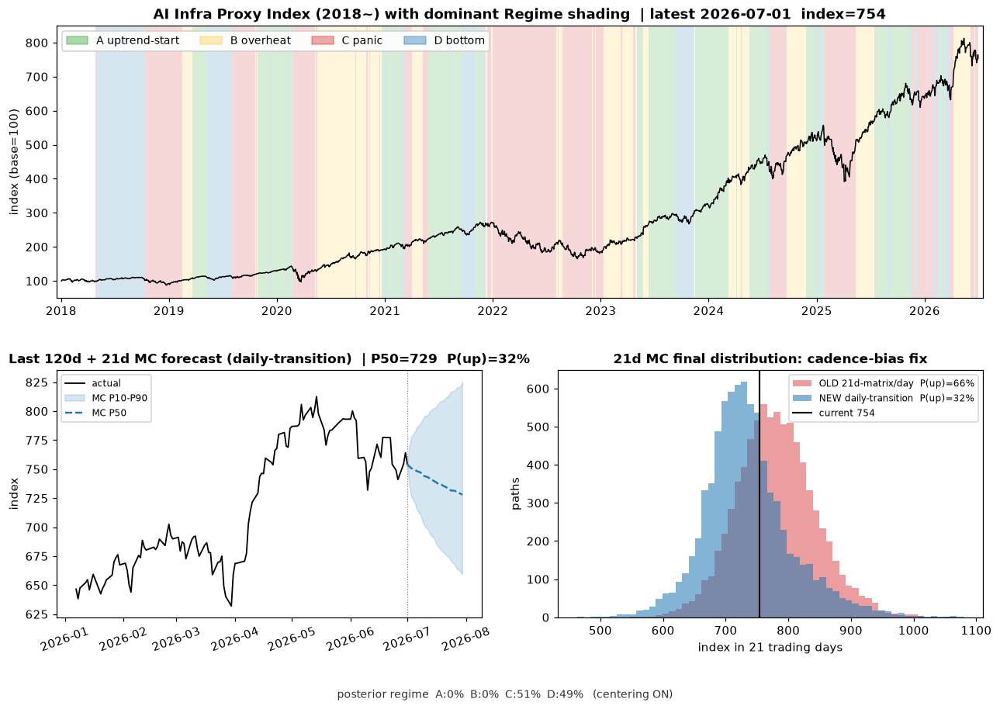
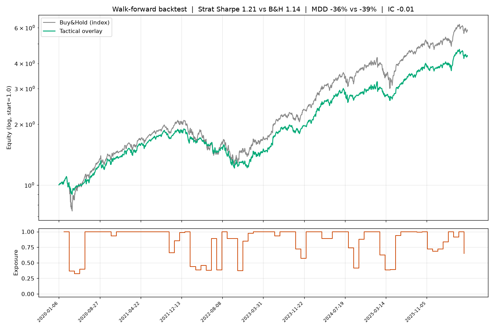

지금 시장은 패닉 국면입니다(신뢰도 44%). 변동성이 크고 시장이 겁먹은 구간. 단기 급락 위험이 있지만, 과하게 빠졌다면 반등 기회이기도. 모델은 이를 단기 신호 관망로 읽고 있어요.
최근 추세(모멘텀)는 아래로 향하는 힘이 우세하고(20일 -5.8%), 한 달 뒤를 수천 번 시뮬레이션하면 중심값은 742pt(현재 대비 -1.6%), 오를 확률은 43%로 계산됩니다. 좋게 풀리면 +13%, 나쁘게 풀리면 -12% 정도가 위·아래 시나리오예요.
뉴스 분위기는 긍정적인 편(+0.27)이고, 장기 생애주기 점수는 81.0/100으로 구조적 성장 여력이 큰 국면입니다(확장 초기 — 성장이 막 본격화되는 단계).
지금과 비슷했던 과거 시점들은 이후 3개월(63일) 평균 +10%로, 시장 평균(+7%)보다 강세 흐름이었습니다(참고용).
정리하면, 방향이 뚜렷하지 않은 구간입니다. 무리한 베팅보다 신호가 명확해질 때까지 관망하며 분할로 대응하는 편이 안전합니다.
| 종목 | 현재 | 1일 | 1주 | 1개월 | 연초비 |
|---|---|---|---|---|---|
| ^SOX 필라델피아 반도체지수 | 13,353 | -6.3% | -0.8% | +3.0% | +81.2% |
| ^NDX 나스닥100 | 29,809 | -1.5% | +2.0% | -2.3% | +18.3% |
| ^GSPC S&P 500 | 7,483 | -0.2% | +1.7% | -1.5% | +9.1% |
| 종목 | 현재 | 1일 | 1주 | 1개월 | 연초비 |
|---|---|---|---|---|---|
| NVDA 엔비디아 | 198 | -1.2% | -0.7% | -11.8% | +4.8% |
| AVGO 브로드컴 | 369 | -2.2% | -3.3% | -19.6% | +6.6% |
| TSM TSMC | 444 | -7.0% | +0.8% | +2.2% | +39.7% |
| AMD AMD | 541 | -6.9% | +4.1% | +6.0% | +142.0% |
| MU 마이크론 | 1,032 | -10.6% | -1.6% | -0.3% | +227.4% |
| ASML ASML | 1,843 | -7.4% | +4.5% | +13.2% | +58.9% |
| SMCI 슈퍼마이크로 | 28 | -5.7% | -14.8% | -41.0% | -10.7% |
| ARM ARM | 337 | -4.8% | -6.0% | -17.5% | +194.1% |
| 종목 | 현재 | 1일 | 1주 | 1개월 | 연초비 |
|---|---|---|---|---|---|
| MSFT 마이크로소프트 | 384 | +3.0% | +5.2% | -16.6% | -18.4% |
| GOOGL 알파벳 | 361 | +1.1% | +4.6% | -4.0% | +14.8% |
| META 메타 | 613 | +8.8% | +9.9% | +2.2% | -5.6% |
| AMZN 아마존 | 242 | +1.4% | +3.2% | -7.5% | +6.7% |
| ORCL 오라클 | 142 | -2.8% | -9.5% | -42.6% | -26.7% |
| 종목 | 현재 | 1일 | 1주 | 1개월 | 연초비 |
|---|---|---|---|---|---|
| VRT 버티브 | 311 | -7.0% | -1.6% | -3.7% | +77.4% |
| ETN 이튼 | 412 | -3.2% | +1.9% | +3.1% | +26.7% |
| GEV GE버노바 | 1,134 | -3.5% | +7.2% | +19.4% | +67.2% |
| CEG 컨스텔레이션 | 236 | -4.8% | -11.7% | -11.0% | -35.2% |
| PWR 퀀타서비스 | 691 | -4.0% | -1.5% | +0.6% | +57.3% |
| 종목 | 현재 | 1일 | 1주 | 1개월 | 연초비 |
|---|---|---|---|---|---|
| DLR 디지털리얼티 | 176 | -1.8% | -8.7% | -4.1% | +15.3% |
| EQIX 에퀴닉스 | 1,014 | -2.8% | -7.4% | -3.5% | +34.0% |

| capex | {'score': 0.894, 'weight': 0.45, 'ttm_yoy': 0.6952, 'q_yoy': 0.8045, 'sum_ttm_capex_b': 433.9} |
| macro | {'score': 0.807, 'weight': 0.25, 'copper_yoy': 0.4147, 'electricity_yoy': 0.0829, 'utilities_yoy': 0.0273} |
| structural | {'score': 0.688, 'weight': 0.3, 'queue': 0.64, 'transformer': 0.8, 'turbine': 0.75, 'vacancy': 0.75, 'power_demand': 0.5} |
| 날짜 | 국면 | 21일 후 | 63일 후 |
|---|---|---|---|
| 2020-10-30 | 🔴 C | +9.5% | +17.7% |
| 2023-04-25 | 🔴 C | +8.2% | +30.8% |
| 2020-10-28 | 🔴 C | +8.5% | +13.1% |
| 2020-11-02 | 🔴 C | +7.7% | +16.1% |
| 2020-03-02 | 🔴 C | -12.9% | +5.8% |
